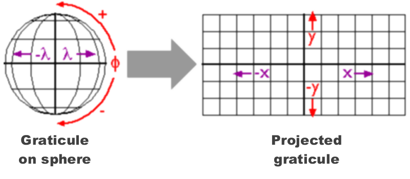

Geospatial Data
Physical World → GIS World

Importing and Plotting Vector Data

A common projection system is Universal Transverse Mercator (UTM). UTM divides the planet up into 60 zones that are 6 degrees wide. The USA falls in zones 10-19.
## long_name write copy
## 1 Aeronav FAA FALSE FALSE
## 2 AmigoCloud TRUE FALSE
## 3 Arc/Info Generate FALSE FALSE
## 4 Arc/Info Binary Coverage FALSE FALSE
## 5 Arc/Info E00 (ASCII) Coverage FALSE FALSE
## 6 Atlas BNA TRUE FALSE
## 7 AutoCAD Driver FALSE FALSE
## 8 Carto TRUE FALSE
## 9 Cloudant / CouchDB TRUE FALSE
## 10 CouchDB / GeoCouch TRUE FALSE
## 11 Comma Separated Value (.csv) TRUE FALSE
## 12 OGC CSW (Catalog Service for the Web) FALSE FALSE
## 13 Microstation DGN TRUE FALSE
## 14 AutoCAD DXF TRUE FALSE
## 15 French EDIGEO exchange format FALSE FALSE
## 16 Elastic Search TRUE FALSE
## 17 ESRI Shapefile TRUE FALSE
## 18 Geoconcept TRUE FALSE
## 19 GeoJSON TRUE FALSE
## 20 Geomedia .mdb FALSE FALSE
## 21 GeoRSS TRUE FALSE
## 22 Google Fusion Tables TRUE FALSE
## 23 Geography Markup Language (GML) TRUE FALSE
## 24 GeoPackage TRUE TRUE
## 25 GPSBabel TRUE FALSE
## 26 GPSTrackMaker TRUE FALSE
## 27 GPX TRUE FALSE
## 28 Hydrographic Transfer Vector FALSE FALSE
## 29 HTTP Fetching Wrapper FALSE FALSE
## 30 Idrisi Vector (.vct) FALSE FALSE
## 31 OpenJUMP JML TRUE FALSE
## 32 JPEG-2000 driver based on OpenJPEG library FALSE TRUE
## 33 JPEG-2000 part 1 (ISO/IEC 15444-1), based on Jasper library FALSE TRUE
## 34 Keyhole Markup Language (KML) TRUE FALSE
## 35 MapInfo File TRUE FALSE
## 36 Memory TRUE FALSE
## 37 Microsoft SQL Server Spatial Database TRUE FALSE
## 38 MySQL TRUE FALSE
## 39 Network Common Data Format TRUE TRUE
## 40 ODBC TRUE FALSE
## 41 Open Document/ LibreOffice / OpenOffice Spreadsheet TRUE FALSE
## 42 GMT ASCII Vectors (.gmt) TRUE FALSE
## 43 Planetary Data Systems TABLE FALSE FALSE
## 44 SDTS FALSE FALSE
## 45 VRT - Virtual Datasource FALSE FALSE
## 46 OpenAir FALSE FALSE
## 47 ESRI FileGDB FALSE FALSE
## 48 OpenStreetMap XML and PBF FALSE FALSE
## 49 PCIDSK Database File TRUE FALSE
## 50 Geospatial PDF TRUE TRUE
## 51 PostgreSQL SQL dump TRUE FALSE
## 52 ESRI Personal GeoDatabase FALSE FALSE
## 53 Planet Labs Scenes API FALSE FALSE
## 54 PostgreSQL/PostGIS TRUE FALSE
## 55 EPIInfo .REC FALSE FALSE
## 56 IHO S-57 (ENC) TRUE FALSE
## 57 SEG-P1 / UKOOA P1/90 FALSE FALSE
## 58 SEG-Y FALSE FALSE
## 59 Selafin TRUE FALSE
## 60 SQLite / Spatialite TRUE FALSE
## 61 Tim Newport-Peace's Special Use Airspace Format FALSE FALSE
## 62 Scalable Vector Graphics FALSE FALSE
## 63 Storage and eXchange Format FALSE FALSE
## 64 U.S. Census TIGER/Line TRUE FALSE
## 65 UK .NTF FALSE FALSE
## 66 VDV-451/VDV-452/INTREST Data Format TRUE FALSE
## 67 Czech Cadastral Exchange Data Format FALSE FALSE
## 68 Walk FALSE FALSE
## 69 WAsP .map format TRUE FALSE
## 70 OGC WFS (Web Feature Service) FALSE FALSE
## 71 MS Excel format FALSE FALSE
## 72 MS Office Open XML spreadsheet TRUE FALSE
## 73 X-Plane/Flightgear aeronautical data FALSE FALSEView layers in a directory:
Where dsn is a directory.
## [1] "veg37" "Yosemite_POI" "yose_boundary" "veg37_alliances"
## attr(,"driver")
## [1] "ESRI Shapefile"
## attr(,"nlayers")
## [1] 4View metadata before importing:
where shape_file_name is the name of the directory, minus the .shp extension
To import, use readOGR()
ca_counties_alb <- rgdal::readOGR("../outputs/rspatial_scgis19/docs/data", "ca_counties_census")
summary(ca_counties_alb)kml_fn <- "../docs/data/berkeley_public_sites.kml"
file.exists(kml_fn)
rgdal::ogrListLayers(kml_fn)
brk_sites <- rgdal::readOGR(kml_fn, "Public Facilities")
summary(brk_sites)rgdal can import from a file geodatabase also. In this case, the source is the name of a directory.
gdb_dir <- "../docs/data/sf_crime.gdb"
file.exists(gdb_dir)
rgdal::ogrListLayers(gdb_dir)
sfcrime_sp <- rgdal::readOGR(dsn=gdb_dir,layer="San_Francisco_Crimes")
class(sfcrime_sp)
names(sfcrime_sp@data)
plot(sfcrime_sp, pch=16, cex=0.4, axes=T, asp=1)To determine if you can export as well as import a specific file format, look at the OGR driver info by running ogrDrivers().
## name long_name write copy isVector
## 17 ESRI Shapefile ESRI Shapefile TRUE FALSE TRUE## name long_name write copy isVector
## 34 KML Keyhole Markup Language (KML) TRUE FALSE TRUE## name long_name write copy isVector
## 47 OpenFileGDB ESRI FileGDB FALSE FALSE TRUEVector layers can be viewed with the basic plot() function
There are lots of optional arguments to make it look nicer
There are plotting packages for even nicer output (e.g., ggplot2)
Notice how its squished? We can fix that with the asp argument (aspect ratio).
Other common arguments for plot()
Plotting Examples
Here we pass the col argument to give the polygon a fill.
tmap, ggplot2, ggmap, or lattice{kind=link}